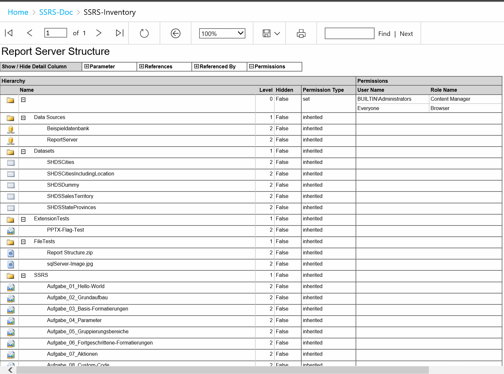
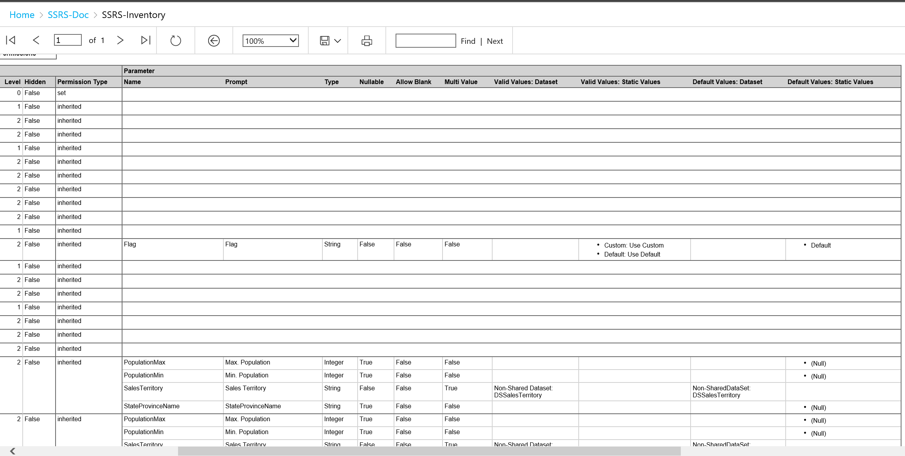
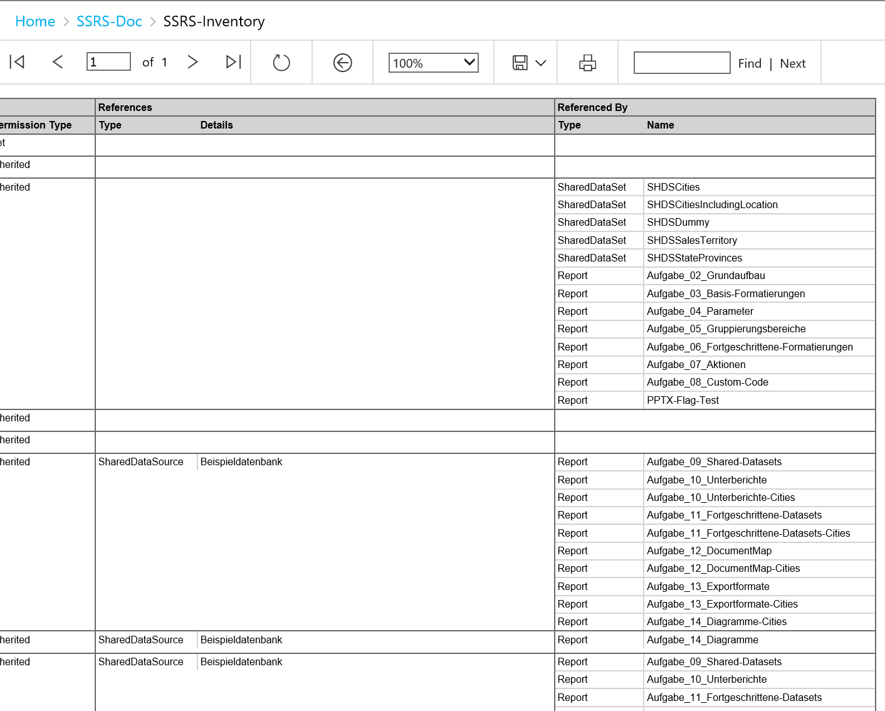
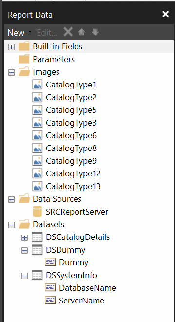
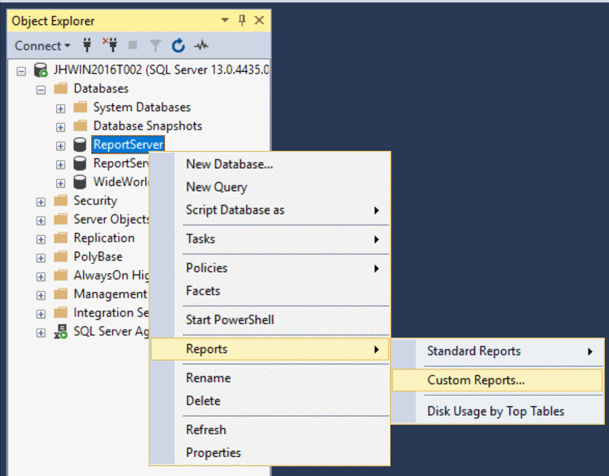
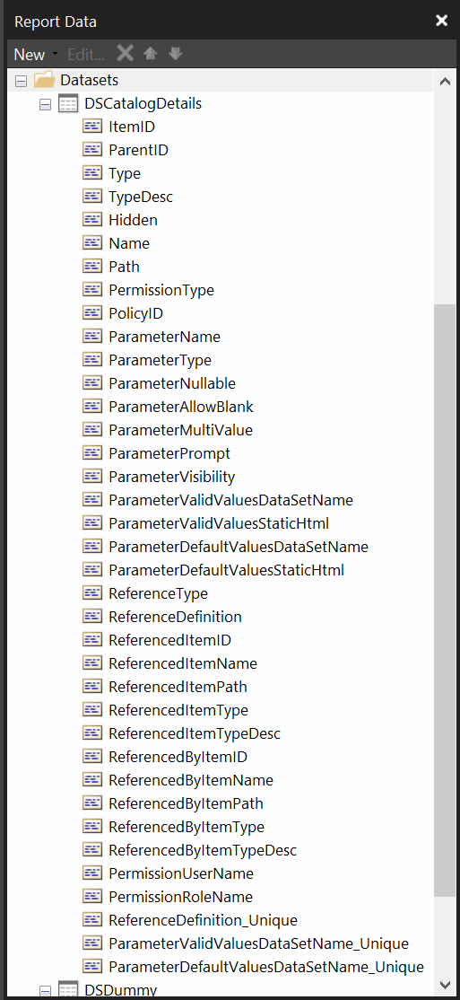

During a SSRS project with a lot of reports, there was the idea to have a detailed non-static documentation for the following aspects:
- Report-Server-Structure
- Permissions
- Parameters
- Basic data like name, type etc.
- Value List, static or reference to dataset
- Default Value, static or reference to dataset
- References
- Shared DataSources
- Shared DataSets
- Subreports
- URL- and Report-Actions
- Referenced Assemblies
- ReferencedBy => like References, only vice versa
There are many good resources out there covering different parts of the story. But I haven't found one that covers all. Therefore, I dig deeper into the Report Server Database. Doing so also knowing that its structure may change with without notice by SQL Server Updates, Service Packs and Releases and that all queries must be done carefully, not affecting others using the Report Server.
The result should also be neat and handy to be usable also directly within SQL Server Management Studio as Custom Report with no further requirements. And on top, it should work for a current SQL Server Reporting Services Instance (2016) in native mode and for SSRS 2012 in SharePoint-Integrated-Mode.
How the result should look like
Basic View with Hierarchy and Control-Panel on top to add Parameter, References, ReferencedBy and Permissions on demand:

Parameters:

References and Referenced By:

Report Design
Report Design
The design for the report consists of:
- Headline
- Table bound to a Dummy-Dataset, containing the TextBoxes used as Column-Toggle-Items in the Detail-Table
- Main-Table
- containing icons for different element types
- Grouped by ItemID of Report and recursively connected by ParentID
- No Detail-Rows directly in Detail-Table, only a Group-Header-Row
- Basic columns with Icon, Name, Level (0, 1, 2, ... n), Hidden (true / false), Permission Type (set / inherited)
- Further columns for Parameters, References, Referenced By and Permissions
- Column-Visibility could be toggled with textboxes of separate table
- 2nd Header-Row of main-table also contains a sub-table for each column with the corresponding row-headers
-
- Detail rows and columns are in separate sub-tables
- Tables are filtered with "[Relevant-Data-Column] <> Nothing"
=> E.g. hide rows with empty Parameter-Data, same row may contain Permission-Data - Detail-Columns contain Bookmark-Actions if the content references something else, e.g. Parameters based on Shared DataSets, Report-Actions, Subreports
- Tables are filtered with "[Relevant-Data-Column] <> Nothing"
- Footer with data from a SystemInfo-Dataset containing the current SQL Server and database name
-
="Report " & Globals!ReportName & " executed by " & User!UserID & " on " & First(Fields!ServerName.Value, "DSSystemInfo") & ", Database '" & First(Fields!DatabaseName.Value, "DSSystemInfo") & "' at " & Globals!ExecutionTime
-
Report Data Elements
To get that basic design, the following data elements are used:
- Different icons for each element types
- Datasource pointing on the target ReportServer-Database
- Dummy-Dataset
- SystemInfo-Dataset
- CatalogDetails-Dataset with all the important data
In Report Designer, it looks like:

Follow the rules: Reports for SQL Server Management Studio (SSMS)
In order to get the report executable also directly in SSMS, it may not reference Shared DataSources, Shared DataSets and Subreport, also Parameter-Handling is constrained. Therefore, the report does all the work itself, not referencing anything else but the Report Server Database.

Differences between Report Versions
There are only very few differences between the Report Definitions for SSRS 2008R2 (including 2012 / 2014) and SSRS 2016:
- Schema of RDL-File and namespace for XML-Queries within Main-Dataset
- 2008R2: http://schemas.microsoft.com/sqlserver/reporting/2010/01/reportdefinition
- 2016: http://schemas.microsoft.com/sqlserver/reporting/2016/01/reportdefinition
- ReportParametersLayout
With SSRS 2016, the layout of the parameters is customizable. Within the RDL-File, this is stored as ReportParametersLayout-Element.
The SSRS 2016 Report may also work with newer versions - as long as the schema doesn't change.
Getting the data
The Report Server Database is intended as black box, not to be accessed directly. Therefore no offical documentation about the database structure exists. If you proceed to query it, do so with extreme caution and at your own risk.
SharePoint-Integrated-Mode vs. Native-Mode
The Report Server Catalog mostly looks the same for SharePoint-Integrated-Mode and Native-Mode, except the following scenarios, handled by the query:
- Report-Elements stored with File-Extension, e.g. ".rdl" for Reports, ".rsd" for Shared DataSets and ".rsds" for Shared DataSources
- No report structure, only root-folder
The DataSet-Query gets the basic element structure into Database-Temp-Tables (#...) first and then checks, if it runs on a SharePoint-Integrated-Mode Database - modifying the data in the Temp-Tables before further processing.
Condition for SharePoint-Integrated-Mode:
- only one folder exists according to Catalog-Table
- but elements exist with paths signalizing sub-folders (several slashes in it, e.g. "/.../...")
Actions:
- Remove extensions
- Generate intermediate folder structure
In addition to that, permissions of SharePoint-Integrated-Mode are stored in SharePoint itself and not handled the query - and therefore not shown in the report. In this case, the ReportServer-Database only contains rudimentary permissions which are listed in the result. In case of Native-Mode, these stored permissions reflect the actual permissions.
Getting the details
Some of the data is directly available in tables, other is only available in the report definition (RDL-File) or in a separate XML-Block:
- Hierarchy and Basic Data
- stored in the table dbo.Catalog
- Parameter
- stored in separate ParameterXml in dbo.Catalog, because it may differ from the actual report definition and modified through Report Server GUI (e.g. different label or default value)
- separate XML is modified
- the report definition itself is untouched
- in addition, the Values-DataSetName and DefaultValues-DataSetName is only available in the report definition
- stored in separate ParameterXml in dbo.Catalog, because it may differ from the actual report definition and modified through Report Server GUI (e.g. different label or default value)
- References
- SharedDataSource
- stored in the table dbo.DataSource
- the target item can be linked in the report
- SharedDataSet
- stored in the table dbo.Datasets
- the target item can be linked in the report
- Actions and SubReports
- stored in report definition
- Bookmark-Actions are not listed, because they are only references within the report itself, but not to other components
- Report-Actions are also not listed, if they refer to the report name itself or using an expression "=Globals!ReportName"
- More complex references to itself, e.g. using a JavaScript-URL are not filtered out and therefore may be listed
- if possible, the target items are linked in the report - e.g. if identified in same folder or by full path
- CodeModules
- stored in report definition
- SharedDataSource
- Permissions
- stored in tables dbo.PolicyUserRole, dbo.Users and dbo.Roles
Returning the details: DSCatalogDetails
The result contains separate rows for each element:
- One row per element containing the basic data, all other columns for Parameters, References, ReferencedBy and Permissions are null
- Multiple rows with Parameters and basic data, all other columns are null
- Static Values and Static Default Values are returned as single columns containing HTML using FLWOR-Statements
- The corresponding textboxes therefore contain data with MarkupType set to "HTML"
- Multiple rows with References and basic data, all other columns are null
- Multiple rows with ReferencedBy and basic data, all other columns are null
- Multiple rows with Permissions and basic data, all other columns are null
Gathering the References is designed using a Common-Table-Expression (CTE). Getting the References and ReferencedBy both uses this CTE - the one way and the other way.
In addition, the DataSet contains three calculated columns, used for Bookmark-Navigation within report:
- ReferenceDefinition_Unique
-
=IIf(Fields!ReferenceDefinition.Value = "", "", Fields!ItemID.Value.ToString() & ":" & Fields!ReferenceDefinition.Value)
-
- ParameterValidValuesDataSetName_Unique
-
=IIf(Fields!ParameterValidValuesDataSetName.Value = "", "", Fields!ItemID.Value.ToString() & ":" & Fields!ParameterValidValuesDataSetName.Value)
-
- ParameterDefaultValuesDataSetName_Unique
-
=IIf(Fields!ParameterDefaultValuesDataSetName.Value = "", "", Fields!ItemID.Value.ToString() & ":" & Fields!ParameterDefaultValuesDataSetName.Value)
-
Using the calculated columns is necessary to display and reference the actual Shared DataSet for Valid-Values and Default-Values of a DataSet:
- The Parameter-Rows contain the ItemID of the current report and the in-report name of the DataSet.
- Using both, the referenced ItemID according the separate References-Row could be determined, if the in-report Dataset Name itself refers to a Shared DataSet.
- Doing so, a Bookmark-Link within the report can be added.
The calculated columns don't add value to the data itself and only necessary for rendering - because of a missing multi-column lookup-function within SSRS. Therefore, I've added them as calculated columns and not in the SQL itself.
A look at all columns together:

Conclusion
The result became very complex, but in the end, it fulfills the purpose. Knowing the parts and how they fit together, the overall picture should be complex, but no longer complicated.